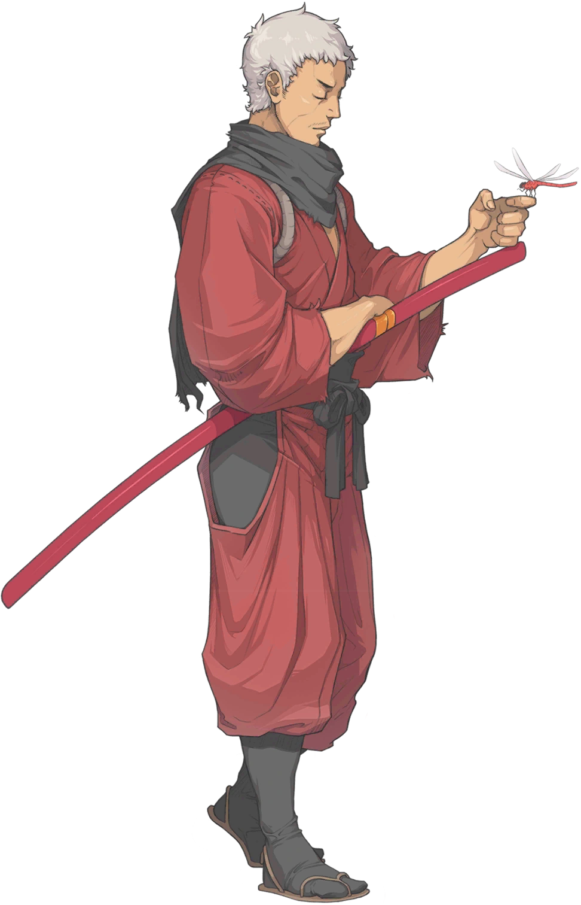
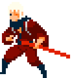
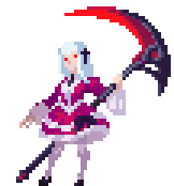
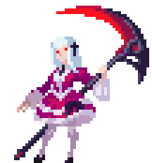
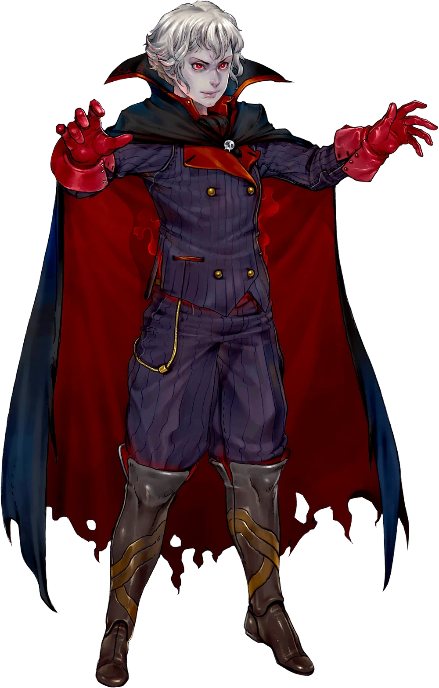
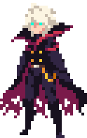

"Seorang pendekar pedang dari negeri misterius, terkenal karena keahliannya dalam menggunakan pedang"
Keseluruhan
Seni Percikan Ginzo Ginzo memiliki HP dan armor yang rendah, yang berarti mudah mati karena beberapa serangan kuat tanpa disadari. Oleh karena itu, Ginzo menyerang dengan kombo yang cepat dan mematikan untuk menghabisi musuh sebelum mereka dapat melakukan hal yang sama padanya. Ia memiliki tingkat kritik tertinggi dalam game dan cooldown yang rendah untuk semua skill-nya, serta pilihan mobilitas yang beragam, membuatnya cukup kuat. Namun, karena statistik dan skill-nya yang rendah, yang kurang aman, disarankan untuk bermain dengan hati-hati, karena jika tidak, Anda mungkin akan mati sebelum menyadarinya
VESPER
 
"Seorang gadis yang kehilangan tanah air dan nama; "Vesper" adalah yang dia klaim untuk dirinya sendiri"
Keseluruhan
Vesper adalah karakter yang berfokus pada peningkatan kemampuan seiring waktu, dengan kerusakan yang meningkat pesat jika diatur dengan benar. Ia tidak memiliki mekanisme pertahanan yang memadai, dan memiliki armor yang sangat rendah, tetapi mengimbanginya dengan output kerusakan yang sangat tinggi dan banyaknya alat untuk menyerang. Mekanik utama Vesper adalah Gloamraven-nya, yang bisa ia kumpulkan dalam pertempuran dan disimpan di antara adegan. Gloamraven dimulai dari 0, dan ia bisa memiliki hingga 100 Gloamraven kapan saja, dengan jumlah saat ini terlihat pada tombol serangan normalnya. Semakin banyak Gloamraven yang dimilikinya, semakin kuat serangannya.
RUTHVEN

"Seorang pemberontak dari ras dunia lain yang ilmu pedangnya yang elegan dan mendominasi menjebak musuh dalam mimpi buruk yang kelam."
Keseluruhan
Ruthven adalah vampir yang menggunakan sihir darah untuk menyerang musuh-musuhnya. Sebagian besar statistiknya rata-rata, ia tidak memiliki armor tetapi memiliki statistik kesehatan yang tinggi sebagai kompensasinya. Kit-nya berpusat pada bilah Apotheosis, yang ketika mencapai batas maksimal akan membuatnya berubah menjadi wujud yang jauh lebih kuat untuk waktu terbatas, yang harus menggunakan jurus pemulihan kesehatan untuk mengimbangi kesehatannya yang terus terkuras. Singkatnya, karakter ini menghargai permainan yang sangat agresif, dan sangat keras kepala dalam membuat kesalahan: definisi paling tepat dari meriam kaca.